Introduction
Plotting areas from different brain atlases ggplot2 is a handy way of displaying results or grouping of aparc data.
Basic use
The function ggseg(), is based in the ggplot2 format, it is recommended to get a little familiarized with with plotting data with ggplot2.
Out-of-the-box, ggseg() works without supplying any extra information. It will create a base plot of the aparc brain segmentations.
##
## Attaching package: 'magrittr'## The following objects are masked from 'package:testthat':
##
## equals, is_less_than, not##
## Attaching package: 'dplyr'## The following object is masked from 'package:testthat':
##
## matches## The following objects are masked from 'package:stats':
##
## filter, lag## The following objects are masked from 'package:base':
##
## intersect, setdiff, setequal, union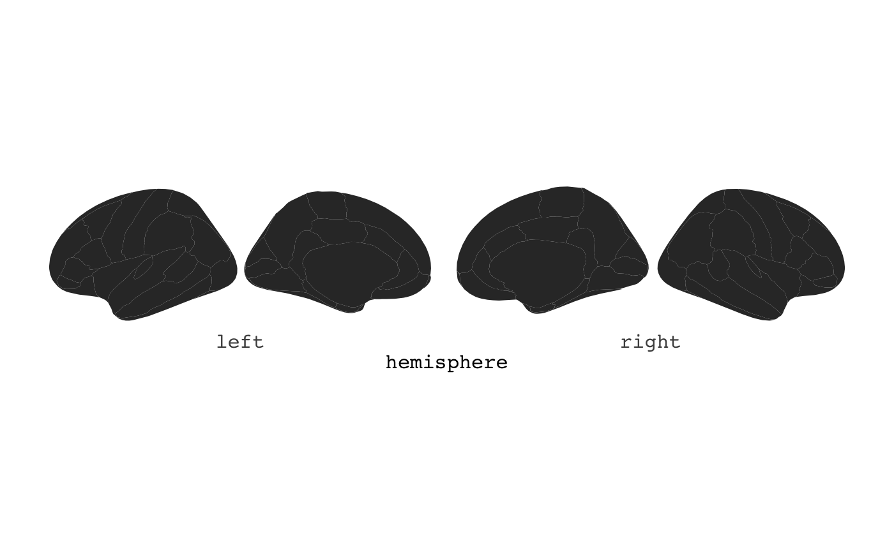
The plot is kept as simple as possible, with as little extra information to ggplot as possible. This is done for it to be easy to extend the plot with the many ggplot options available. By default it plots data(dkt). For instance, you might want to only see the brain and it’s segments, without any grid or axis information. You can add ggplot2’s theme_void to achieve this.
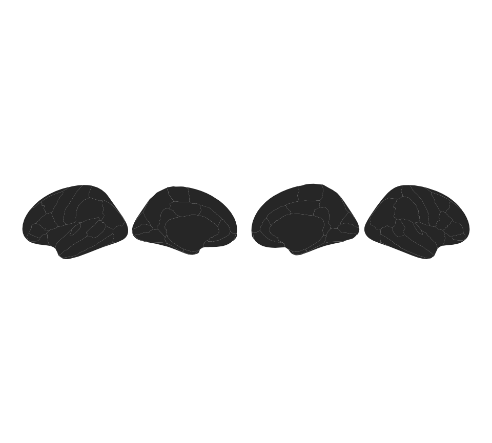
You can supply some extra options to ggseg, to alter the plot as you wish.
You can stack the hemispheres if you want
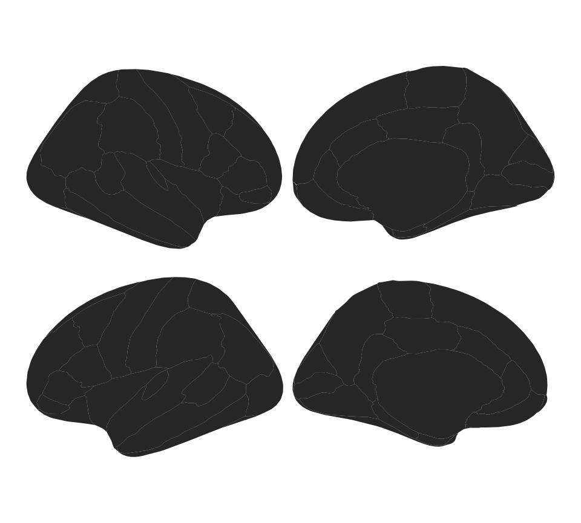
Using fill and colour
Maybe you want each area to have a different colour. ggseg has a built column called area wich you can use as fill to achieve this. Note: unlike other ggplots, before using aes you must indicate mapping=aes.
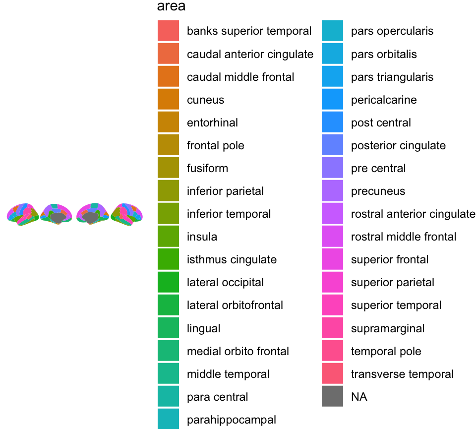
Maybe you also want the contour lines to be black rather than white, and also a little thicker?
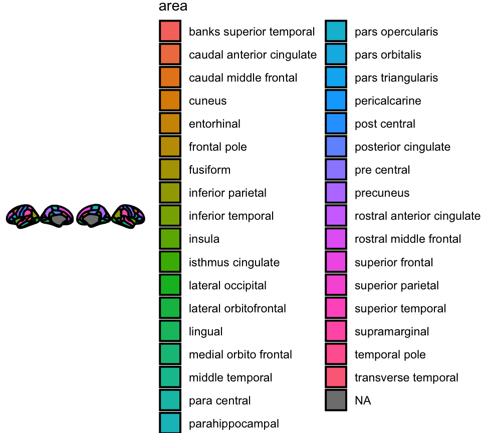
You can also choose to only view one of the hespheres by adding the hemisphere option
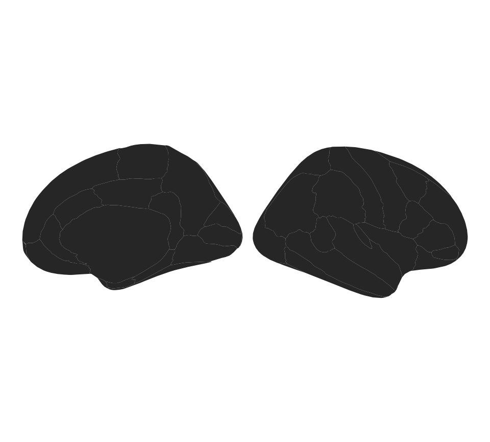
If you want to plot the entire brain, but hightlight specific areas with colour, you will need to provide the function with some data. The data must include a column that overlaps with the columns in the atlas data. Here we create some data with 4 rows, and an area and p column. We provide the p column as the column that dictates the colour of the area. The area column matches a column in the dkt atlas.
someData = data.frame(
area = c("transverse temporal", "insula",
"pre central","superior parietal"),
p = sample(seq(0,.5,.001), 4),
stringsAsFactors = FALSE)
ggseg(.data=someData, mapping=aes(fill=p))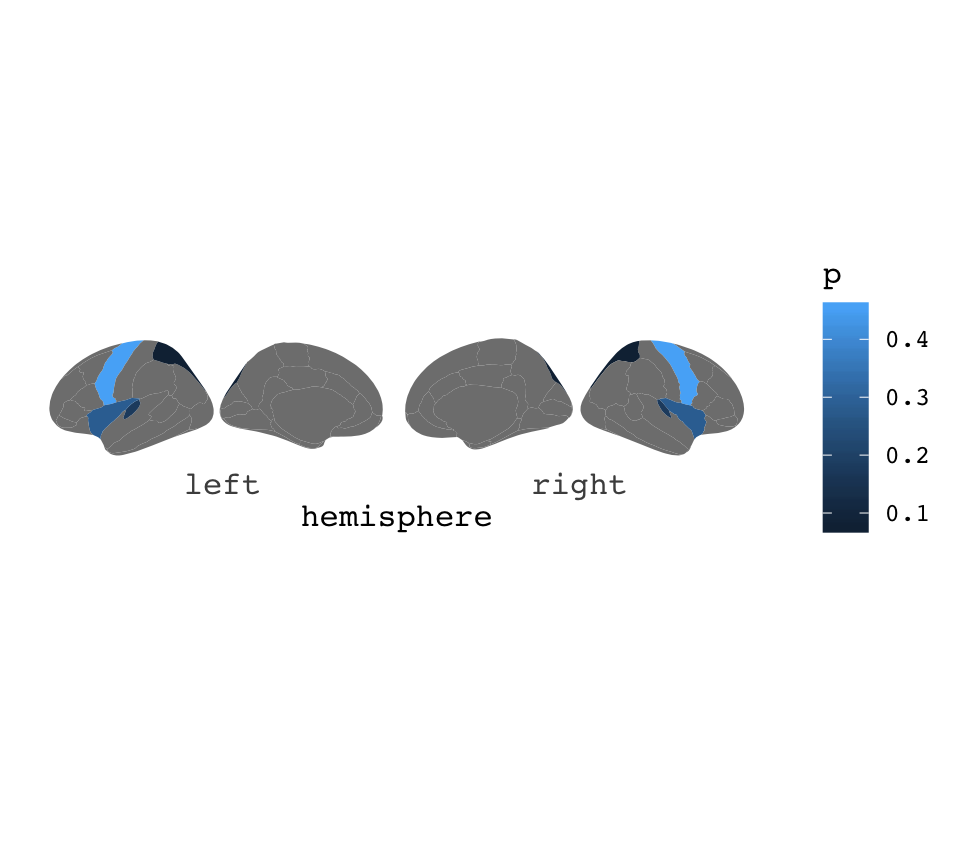
We can also change how this looks, by various ggplot functions
ggseg(.data=someData, colour="black", mapping=aes(fill=p)) +
theme_void() +
scale_fill_gradient(low="firebrick",high="goldenrod") +
labs(title="Aparc plots rule", fill="p-value")
If the results are only in one hemisphere, but you still want to plot both of them, make sure your data.fame includes the column hemi with either “rh” or “lh” for this to happen.
someData$hemi = "right"
ggseg(.data=someData, colour="white",mapping=aes(fill=p)) +
theme_void() +
scale_fill_gradient(low="firebrick",high="goldenrod") +
labs(title="Aparc plots rule")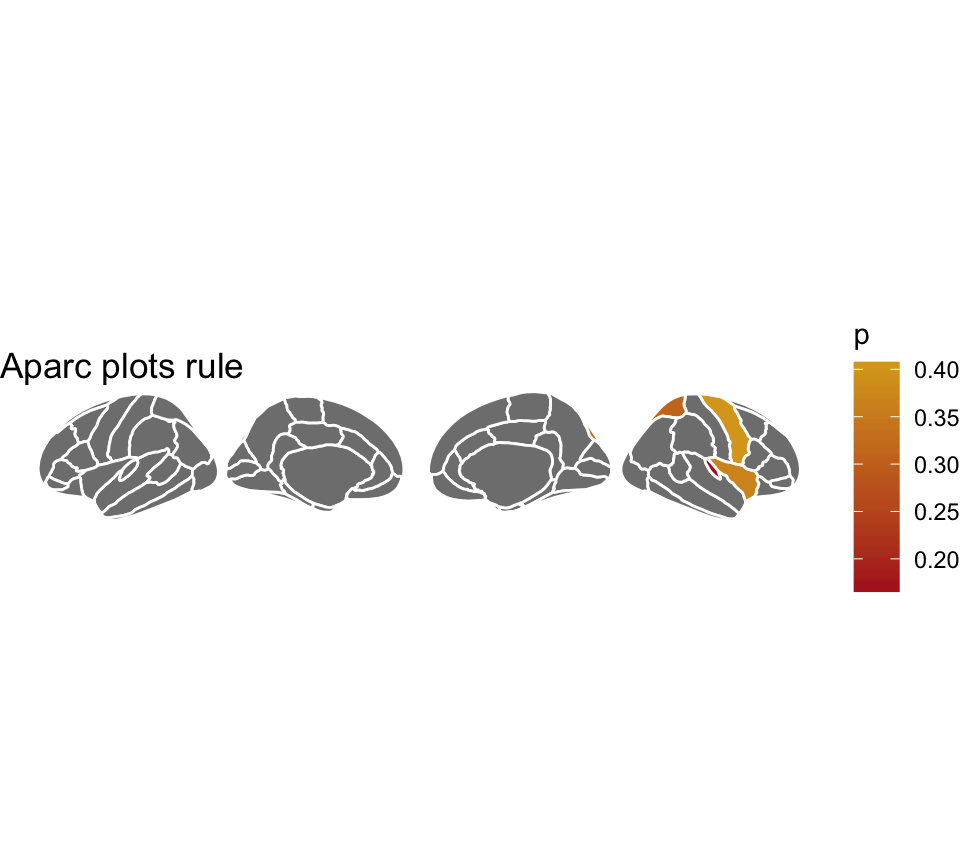
If your data has different statistics for different groups, and you want to plot them all, we can use ggplot’s facet_wrap or facet_grid for that. The data needs to be in long format for this to work, like ggplot likes it. Also, you’ll need to merge the data outside of the plotting function for it to work nicely. This is because the atlas data must be completely duplicated for plotting to look nice.
someData = data.frame(
area = rep(c("transverse temporal", "insula",
"pre central","superior parietal"),2),
p = sample(seq(0,.5,.001), 8),
AgeG = c(rep("Young",4), rep("Old",4)),
stringsAsFactors = FALSE)
ggseg(.data=someData, colour="white", mapping=aes(fill=p)) +
facet_wrap(~AgeG, ncol=1) +
theme(legend.position = "bottom")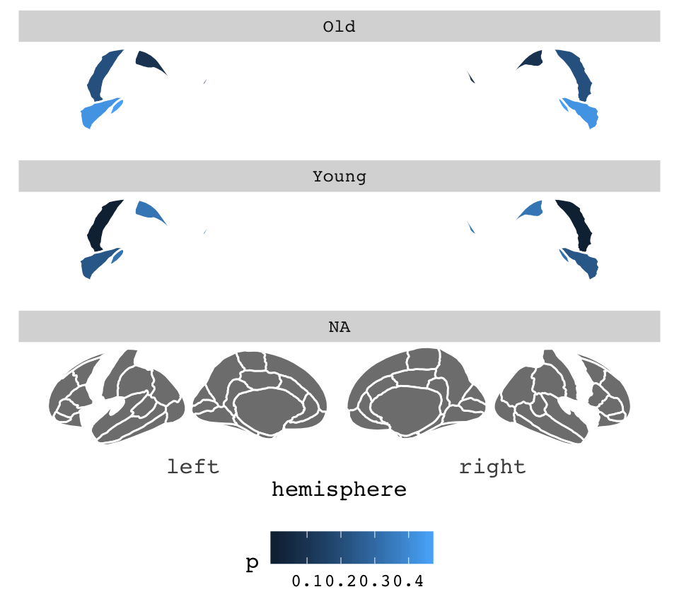 as you can see. The result of this facetting is not what we are after. This is because the the function requires full data to be able to plot, and the AgeG column is NA for everything outside the significant results.
To fix this, you must duplicate the atlas data, and supply your data through the atlas option. This is maybe best achieved by making your data into a list, and then list applying lapply over them, and binding them together again.
someData = someData %>%
group_by(AgeG)
ggseg(.data = someData, atlas=dkt, colour="white", mapping=aes(fill=p)) +
facet_wrap(~AgeG, ncol=1) +
theme(legend.position = "bottom")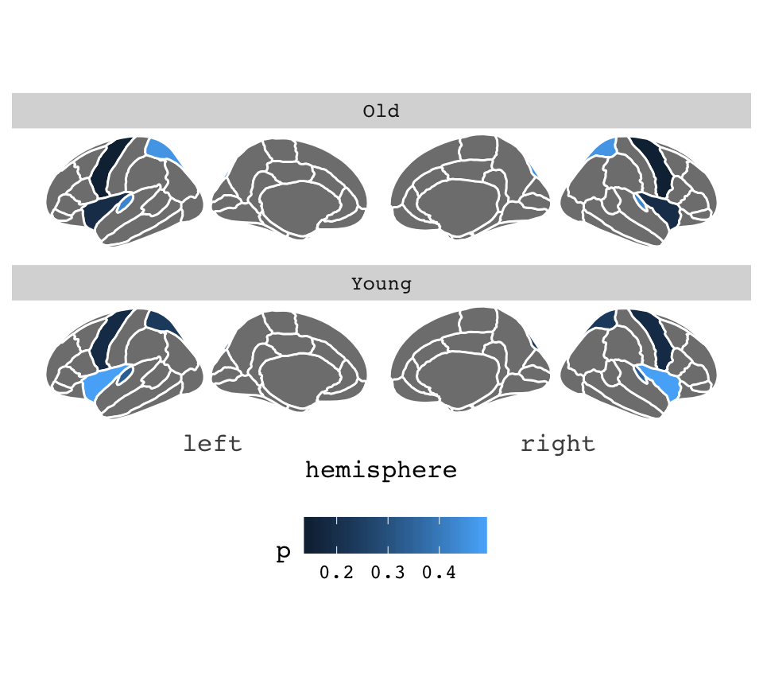
You can read more about more complex functions like this in the vignette for external data
## starting httpd help server ... doneWe can change how this looks quite a bit. Maybe you want it on a dark background, and the areas without any data to be transparent?
ggseg(.data = someData, atlas=dkt, colour="white", mapping=aes(fill=p)) +
facet_wrap(~AgeG, ncol=1) +
theme_dark() +
theme(legend.position = "bottom",
axis.text = element_blank(),
axis.title = element_blank()
) +
scale_fill_continuous(na.value="transparent")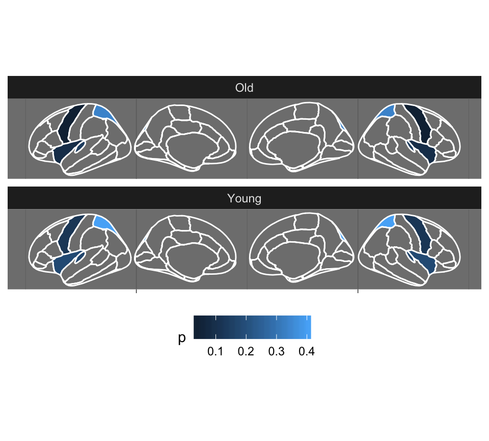
Depending on what type of column is used for fill (continuous or discrete), you can also use the differenct scales to alter the colours.
ggseg(.data = someData, atlas=dkt, colour="white", mapping=aes(fill=p)) +
facet_wrap(~AgeG, ncol=1) +
theme_dark() +
theme(legend.position = "bottom",
axis.text = element_blank(),
axis.title = element_blank()
) +
scale_fill_gradient2(high="goldenrod",low="firebrick",na.value="transparent")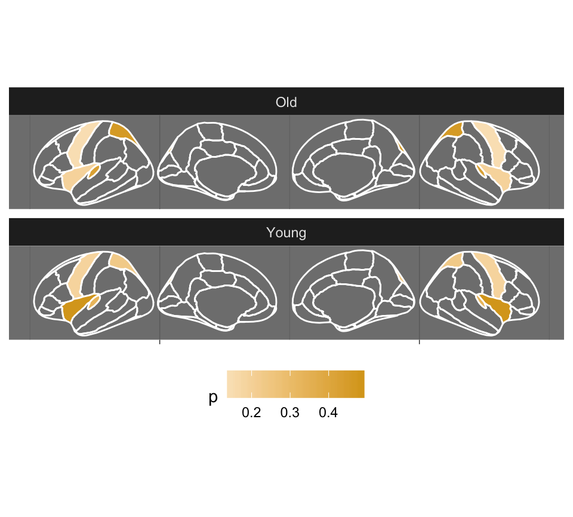
You can try other atlases too.